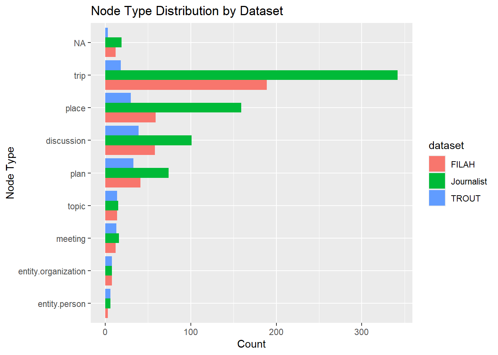
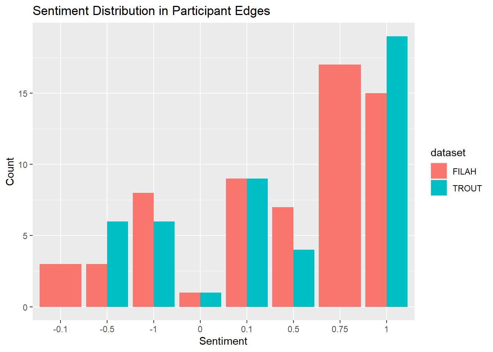
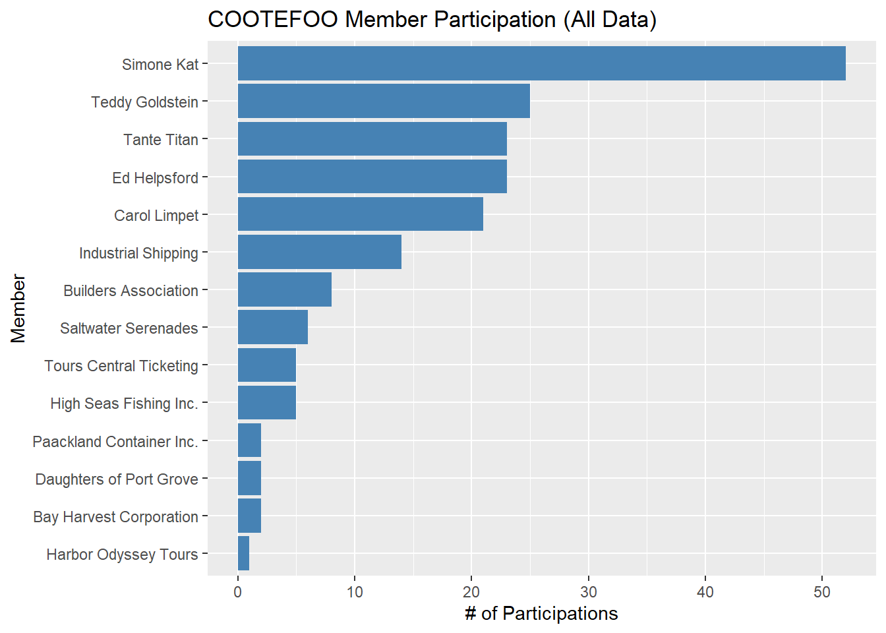
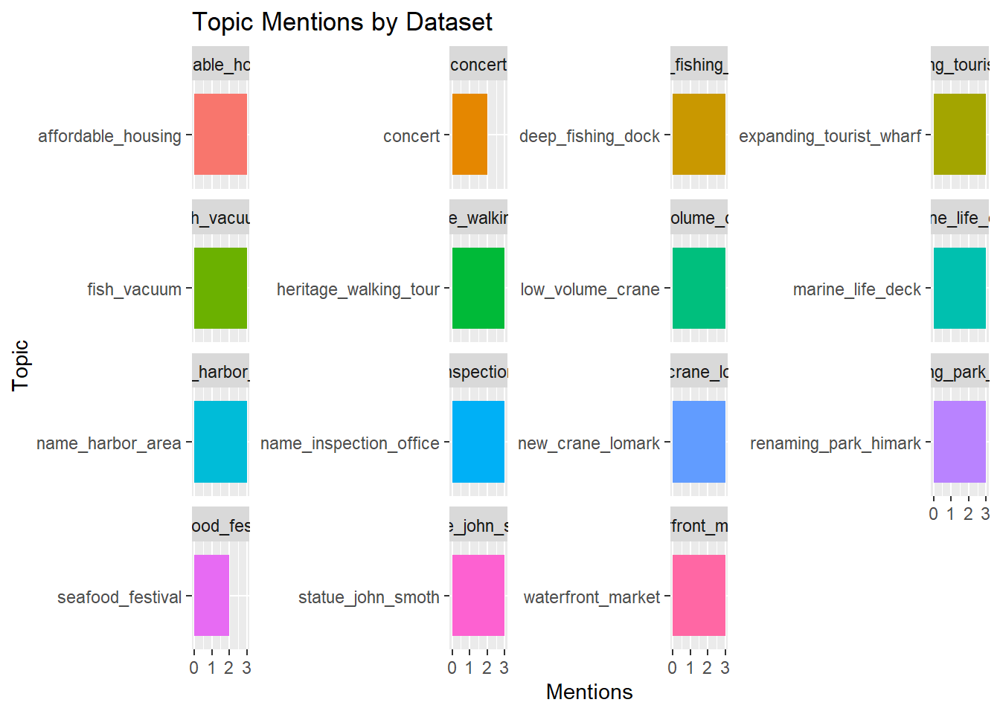
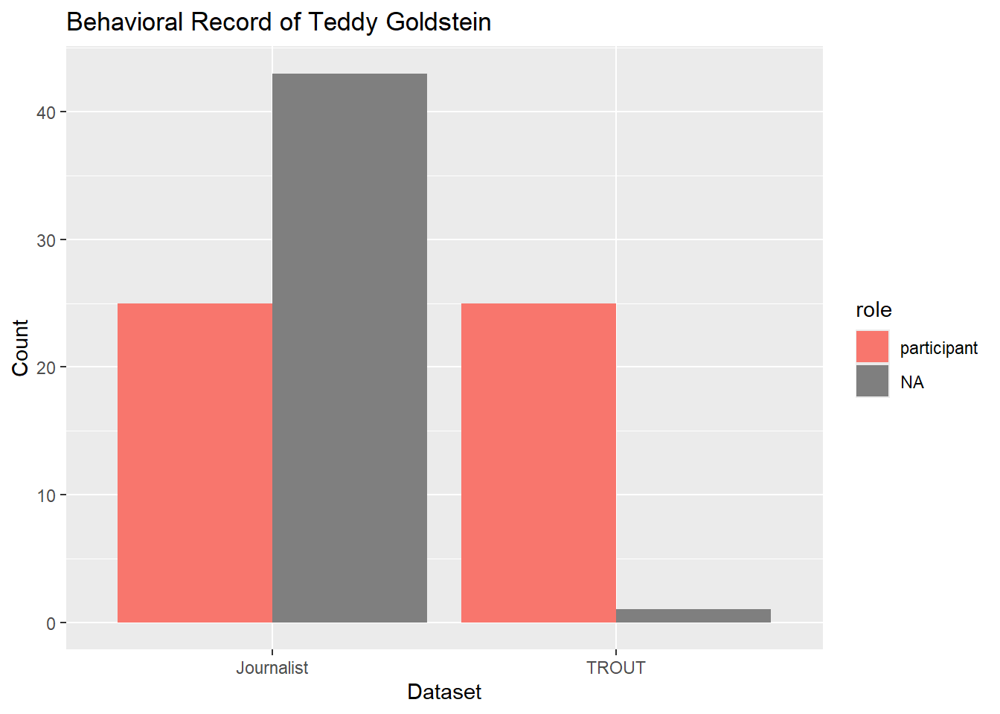
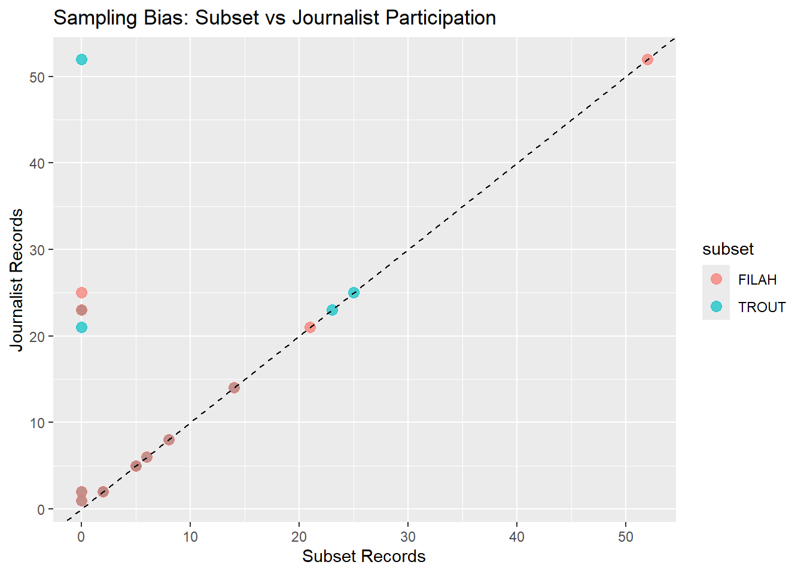

pacman::p_load(tidyverse, jsonlite, janitor, ggraph, tidygraph, visNetwork)Take-Home Exercise 02
Step 1: Load and Parse JSON Graph Data
# Helper to replace NULLs with NA and coerce all fields to character
clean_node_edge <- function(x) {
x[sapply(x, is.null)] <- NA
x <- map(x, ~as.character(.x)) # force all to character
x
}
# Load and extract graph data safely
extract_graph_data <- function(json_data) {
nodes <- map(json_data$nodes, clean_node_edge) %>% map_dfr(as_tibble)
edges <- map(json_data$links, clean_node_edge) %>% map_dfr(as_tibble)
list(nodes = clean_names(nodes), edges = clean_names(edges))
}
# Load raw data
filah_raw <- fromJSON("data/FILAH.json", simplifyDataFrame = FALSE)
trout_raw <- fromJSON("data/TROUT.json", simplifyDataFrame = FALSE)
journalist_raw <- fromJSON("data/journalist.json", simplifyDataFrame = FALSE)
# Extract cleaned data
filah <- extract_graph_data(filah_raw)
trout <- extract_graph_data(trout_raw)
journalist <- extract_graph_data(journalist_raw)Step 2: Node Type Distribution Overview
bind_rows(
filah$nodes %>% mutate(dataset = "FILAH"),
trout$nodes %>% mutate(dataset = "TROUT"),
journalist$nodes %>% mutate(dataset = "Journalist")
) %>%
count(dataset, type) %>%
ggplot(aes(x = reorder(type, n), y = n, fill = dataset)) +
geom_col(position = "dodge") +
coord_flip() +
labs(title = "Node Type Distribution by Dataset", x = "Node Type", y = "Count")
Step 2 Analysis – Node Type Distribution by Dataset
This visualization presents the frequency of node types across the three datasets: FILAH, TROUT, and the full dataset compiled by the journalist. Each bar represents the number of nodes of a specific type within each dataset, allowing for comparison of data coverage and potential sampling bias.
Key Observations:
High concentration of trip nodes in the journalist dataset
The journalist dataset contains the highest number oftripnodes, indicating a significantly more complete coverage of travel behavior among COOTEFOO members. In contrast, the TROUT and FILAH datasets contain far fewer trip records, suggesting that their travel data is selective or incomplete.Presence of missing type values
A small number of nodes in each dataset are categorized underNA, indicating that some nodes are missing type labels. These may be due to inconsistencies or omissions during data integration and warrant further review to determine their relevance or exclusion.Greater contextual depth in the journalist dataset
The journalist dataset also has a higher count ofplace,discussion, andplannodes compared to the two group-specific datasets. This reflects a more comprehensive record of COOTEFOO’s meeting activities and planning discussions, providing deeper insight into the board’s operations.Core node schema is consistent
Despite the differences in volume, all three datasets include the same foundational node types such asmeeting,entity.person, andtopic. This consistency ensures that comparative analyses across datasets are structurally valid.Implications for bias analysis
The underrepresentation of certain node types—particularlytripandplace—in the TROUT and FILAH datasets suggests that conclusions drawn solely from these subsets may be limited or skewed. Their selective inclusion of information may support their respective narratives, which highlights the importance of cross-referencing with the journalist’s more complete dataset.
Conclusion:
The node type distribution underscores the limitations of relying solely on data provided by advocacy groups. The journalist dataset offers a more balanced and detailed view of COOTEFOO’s actions and serves as a necessary baseline for assessing the validity of bias-related accusations.
Step 3: Sentiment Distribution of Participants
analyze_sentiment <- function(edges, label) {
edges %>%
filter(role == "participant", !is.na(sentiment)) %>%
count(target, sentiment, sort = TRUE) %>%
mutate(dataset = label)
}
sentiment_trout <- analyze_sentiment(trout$edges, "TROUT")
sentiment_filah <- analyze_sentiment(filah$edges, "FILAH")
bind_rows(sentiment_trout, sentiment_filah) %>%
ggplot(aes(x = sentiment, y = n, fill = dataset)) +
geom_col(position = "dodge") +
labs(title = "Sentiment Distribution in Participant Edges", y = "Count", x = "Sentiment")
Step 3 Analysis – Sentiment Distribution in Participant Edges
This visualization examines the distribution of sentiment values associated with participant edges in the FILAH and TROUT datasets. Sentiment values represent the stance or emotional tone of a person’s participation in a discussion or plan. These values typically range from -1 (strongly negative) to 1 (strongly positive), providing a proxy for support or opposition toward discussed topics or actions.
Key Observations:
Overall positive sentiment bias in both datasets
Both TROUT and FILAH datasets show a higher frequency of positive sentiment values, especially at the upper end of the scale (0.75 and 1). This suggests that both groups tend to document or highlight instances where individuals express supportive or agreeable stances, potentially to reinforce their respective positions.FILAH contains more records with moderate sentiment
Compared to TROUT, the FILAH dataset includes a more even distribution of sentiments across the mid-range (0.1 to 0.75). This could indicate a broader or more nuanced inclusion of viewpoints, although it may also reflect targeted sampling of discussions involving partial support for fishing-related plans.TROUT data concentrates sharply on highly positive sentiment
TROUT exhibits a stronger spike at the maximum value (1.0), with fewer mid-range values, suggesting a selective focus on strongly favorable interactions. This selective recording could amplify perceived support for tourism-related initiatives by omitting neutral or dissenting views.Underrepresentation of negative sentiment
Both datasets include relatively few records with negative sentiment values (below 0). The lack of critical or opposing views may indicate either a real consensus on certain topics or, more likely, a form of selection bias where negative contributions are excluded or deprioritized in each group’s records.
Conclusion:
The sentiment distribution across both datasets suggests a bias toward capturing positive or supportive voices, with limited representation of dissent. This pattern raises concerns about the completeness and objectivity of the data provided by both TROUT and FILAH. To draw a fair conclusion regarding bias in COOTEFOO’s actions, these sentiment records must be evaluated against the more comprehensive dataset compiled by the journalist.
Step 4: COOTEFOO Member Activity (Journalist Dataset)
journalist$edges %>%
filter(role == "participant", str_detect(target, " ")) %>%
count(target, source) %>%
count(target, wt = n) %>%
ggplot(aes(x = reorder(target, n), y = n)) +
geom_col(fill = "steelblue") +
coord_flip() +
labs(title = "COOTEFOO Member Participation (All Data)", x = "Member", y = "# of Participations")
This chart provides a count of participation events (i.e., being recorded as a participant in discussions or plans) by individuals and organizations in the COOTEFOO committee, as observed in the full dataset compiled by the journalist. It reflects overall engagement levels in committee activities and serves as a baseline for evaluating the completeness of TROUT and FILAH datasets.
Key Observations:
Simone Kat is the most active member
With over 50 recorded participations, Simone Kat stands out as the most engaged COOTEFOO member by a significant margin. This level of involvement suggests a potentially influential role in discussions and decisions, which may warrant closer scrutiny in bias analysis.Core leadership figures show consistent involvement
Other key members such as Teddy Goldstein, Tante Titan, Ed Helpsford, and Carol Limpet each have between 20 and 30 participations. Their relatively balanced participation implies a core group that actively contributes to the committee’s operations across a wide range of topics and events.Organizations participate less frequently
Compared to individual members, organizational entities such as Industrial Shipping and Builders Association are recorded less often, typically under 20 participations. This suggests that organizational involvement is more targeted and potentially topic-specific.Long tail of low-frequency participants
Several organizations and entities appear in only a handful of events (e.g., Bay Harvest Corporation, Harbor Odyssey Tours). Their low frequency may indicate either minimal involvement or selective documentation, especially relevant when evaluating whether certain sectors (e.g., tourism or fishing) are underrepresented.Useful benchmark for evaluating subset datasets
This participation profile establishes a reference point for checking the coverage of each COOTEFOO member in the TROUT and FILAH datasets. Substantial deviations in member presence across these subsets may reveal targeted inclusion or exclusion strategies, indicating sampling bias.
Conclusion:
The journalist dataset provides a comprehensive view of COOTEFOO member engagement, revealing both dominant contributors and peripheral participants. This distribution is essential for assessing whether accusations of bias by TROUT and FILAH are supported by representative participation data or skewed by selective reporting.
Step 5: Topic Mentions Across Datasets
get_topics <- function(df, label) {
df %>% filter(type == "topic") %>% mutate(dataset = label)
}
bind_rows(
get_topics(trout$nodes, "TROUT"),
get_topics(filah$nodes, "FILAH"),
get_topics(journalist$nodes, "Journalist")
) %>%
count(dataset, label) %>%
ggplot(aes(x = reorder(label, n), y = n, fill = dataset)) +
geom_col(show.legend = FALSE) +
facet_wrap(~dataset, scales = "free_y") +
coord_flip() +
labs(title = "Topic Mentions by Dataset", x = "Topic", y = "Mentions")
Step 6: Person-Centric Comparison
selected_person <- "Teddy Goldstein"
bind_rows(
trout$edges %>% filter(target == selected_person) %>% mutate(source_dataset = "TROUT"),
filah$edges %>% filter(target == selected_person) %>% mutate(source_dataset = "FILAH"),
journalist$edges %>% filter(target == selected_person) %>% mutate(source_dataset = "Journalist")
) %>%
count(source_dataset, role) %>%
ggplot(aes(x = source_dataset, y = n, fill = role)) +
geom_col(position = "dodge") +
labs(title = paste("Behavioral Record of", selected_person), y = "Count", x = "Dataset")
Step 7: Sampling Bias – Coverage Gap Across Datasets
count_participants <- function(edges, dataset) {
edges %>% filter(role == "participant", str_detect(target, " ")) %>% count(target, name = "n") %>% mutate(dataset = dataset)
}
participants <- bind_rows(
count_participants(trout$edges, "TROUT"),
count_participants(filah$edges, "FILAH"),
count_participants(journalist$edges, "Journalist")
)
participants %>%
pivot_wider(names_from = dataset, values_from = n, values_fill = 0) %>%
pivot_longer(cols = c("TROUT", "FILAH"), names_to = "subset", values_to = "subset_n") %>%
ggplot(aes(x = subset_n, y = Journalist, color = subset)) +
geom_point(size = 3, alpha = 0.7) +
geom_abline(linetype = "dashed") +
labs(title = "Sampling Bias: Subset vs Journalist Participation", x = "Subset Records", y = "Journalist Records")